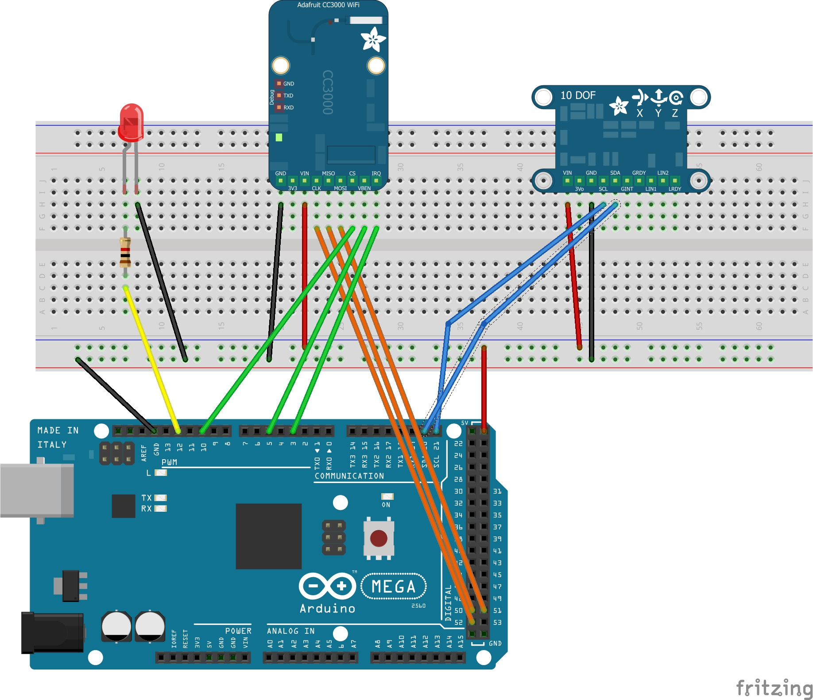
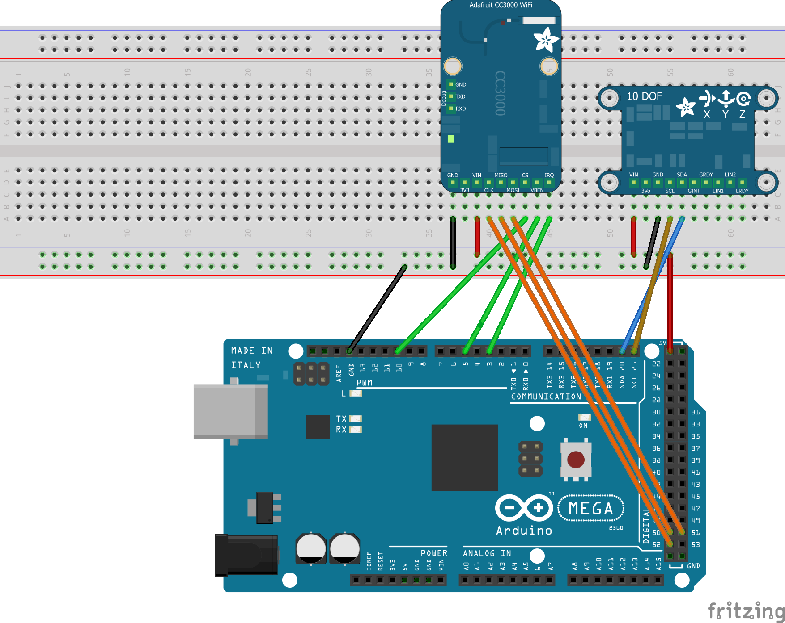

A really quick and small project with temboo and arduino, comes in today.
We’re just using this HW components:
- an Arduino mega2560
- Adafruit CC3000 WiFi Module


A really quick and small project with temboo and arduino, comes in today.
We’re just using this HW components:
A new small project with arduino and temboo, comes in today. We’re just using this hardware:
In order to get the news on your email with Arduino, we are going to use temboo service. Continue reading
Today’s biiday comes in to prove that you can easily make anything you can imagine! This is the first one of a set of three posts in which temboo services are used with:
The layout below has been made for an Arduino mega2560, to use twitter with your Arduino. Continue reading
What’s this biiday project about? Get your Arduino to call you whenever the temperature rises!
In this case, we’re going to make our Arduino board call a phone based on the temperature value obtained from the 10-DOF IMU Breakout module, and then remotely control it with the keypad.
To connect to temboo, we’re using the Adafruit CC300 WiFi Module and reusing code from diego/ardunet.
 Continue reading
What is this biiday project about?
Take your Arduino to filling real data from you home to any SpreadSheet in your Google Drive account, in this case with some values obtained from the 10-DOF IMU Breakout module : pitch, roll, altitude, pressure and temperature.
Our code, reuses from the diego/ardunet block in order to connect us with the CC3000 WiFi module.
And the new Ardunet block with SpreadSheet service for Arduino has the functions to achieve the data filling. The following layout was made for an Arduino Mega 2560:
 Continue reading
In this post we will show how it is possible to send email from Arduino!
We registered at the great temboo service which offers connection >100 services (gmail, twiter, github, and many more) and a library for Arduino. But the provided temboo library expects a reference to something implementing the Arduino SDK Client “interface”. In the setup we’re using an Arduino Mega2560 with the Adafruit CC3000 WiFi module.
If you ever need to connect the CC3000 module with another service, you can do it using this Ardunet block with network utilities for Arduino. Unluckily, the Adafruit CC3000 library does not conform with this interface, so I had to roll my own one.